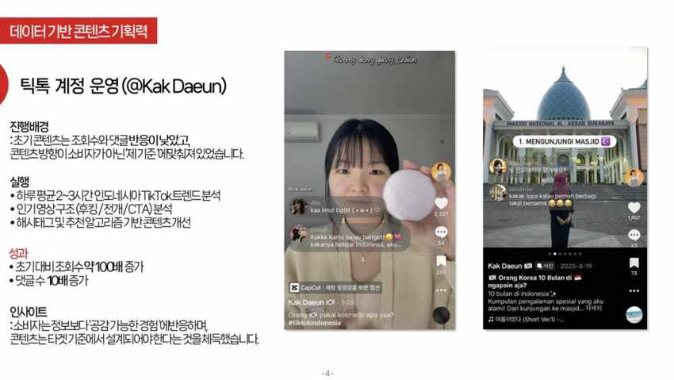
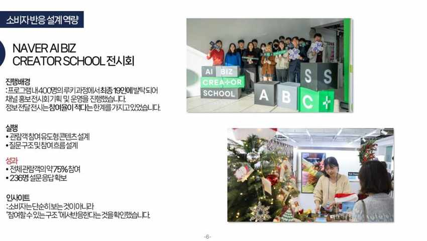
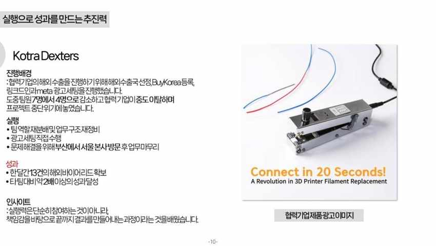

부산외국어대학교
주전공 인도네시아-말레이시아학과
복수전공 국제마케팅학과
MARKETING PORTFOLIO / WON DAEUN
데이터를 기반으로 소비자를 이해하고,
콘텐츠를 통해 공감을 설계하며,
실행으로 결과를 만듭니다.
CONTENT · DIGITAL · GLOBAL MARKETING

01 / ABOUT ME
인도네시아 시장을 직접 경험하며 얻은
인사이트를 바탕으로 성과를 만드는 마케터입니다.
타깃의 반응과 트렌드를 분석해
콘텐츠의 방향을 찾습니다.
경험 중심 스토리와 참여 구조로
소비자의 반응을 이끌어냅니다.
변화와 어려움 속에서도 책임감을 갖고
끝까지 결과를 만듭니다.
02 / SELECTED WORK
데이터 기반 기획부터 소비자 참여, 그리고 실행까지.

조회수 약 100배 · 댓글 10배
초기 콘텐츠는 조회수와 댓글 반응이 낮았고, 콘텐츠 방향이 소비자가 아닌 제 기준에 맞춰져 있었습니다.
소비자는 정보보다 공감 가능한 경험에 반응하며, 콘텐츠는 타깃 기준에서 설계되어야 한다는 것을 체득했습니다.

참여율 약 75% · 설문 236명
400명의 루키 과정에서 최종 19인에 발탁되어 채널 홍보 전시회 기획 및 운영을 진행했습니다. 정보 전달 전시는 참여율이 적다는 한계를 가지고 있었습니다.
소비자는 단순히 보는 것이 아니라 참여할 수 있는 구조에서 반응한다는 것을 확인했습니다.

조회수 약 3배 · 댓글 2배
인도네시아 자카르타를 방문하여 현지 취업 졸업생 선배님 인터뷰를 기획, 촬영 및 편집 후 교내 유튜브에 업로드했습니다.
흥미를 유발하는 썸네일과 초반 후킹 요소가 영상 조회수에 영향을 주는 것을 확인했습니다.

금상 수상
단순 정보 전달형 콘텐츠가 대부분이라는 점을 확인하고, 차별화를 위해 경험 중심 스토리 콘텐츠를 기획했습니다.
경험 기반 스토리 콘텐츠가 단순 정보성 영상보다 높은 몰입과 공감을 만든다는 것을 확인했습니다.

해외 바이어 리드 13건 · 타 팀 대비 약 2배 이상
해외 수출국 선정, BuyKorea 등록, 링크드인과 Meta 광고 세팅을 진행했습니다. 팀원이 7명에서 4명으로 감소하고 협력기업이 중도 이탈하며 프로젝트 중단 위기에 놓였습니다.
실행력은 책임감을 바탕으로 끝까지 결과를 만들어내는 과정이라는 것을 배웠습니다.

이달의 콘텐츠 선정 · 관람객 목표 대비 2배 이상
부산 지역 ESG 활동을 알리고 참여를 유도하기 위한 콘텐츠 제작 및 오프라인 행사 운영에 참여했습니다.
콘텐츠는 실제 행동과 참여로 이어질 때 의미가 있다는 것을 경험했습니다.
03 / EXPERIENCE
주전공 인도네시아-말레이시아학과
복수전공 국제마케팅학과
Surabaya, Indonesia
Darmasiswa 인도네시아 정부초청 장학생
Bali, Indonesia · BIPA 과정 수료
무역부 인턴
인도네시아 특정 상품의 시장 진출 가능성 조사, 잠재 바이어 발굴과 상품 홍보 자료 제작 지원 및 결과 보고서 작성
한국커리어개발원 · 자격 취득
KOTRA(대한무역투자진흥공사) · 자격 취득
인스타그램 학과 홍보 콘텐츠 제작
루키, 프로, 마스터 과정 수료
서포터즈
청년 교육생
전시 부스 방문객 수 부문 3위
금상 수상
특별상 수상
3등상 수상
04 / LET’S CONNECT
사람들이 실제로 행동하게 만드는 콘텐츠를 만들고 싶습니다.
진정한 가치를 전달하는 마케터로 성장하겠습니다.